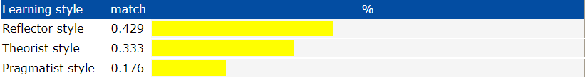
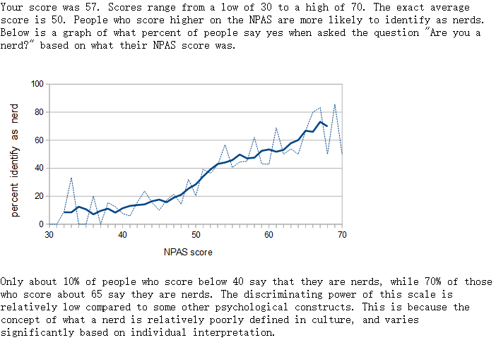

Erxun Liu (Jason)
S3693097
Hi my name is Erxun Liu, And my English name is Jason. I’m from China. This is my first year in RMIT after i finished foundation in La trobe Uni. I am currently studying for a three-year Bachelor degree in IT, My hobbies are all about cars, models and video games. Also I love aviation. My knowledge of computer is because of my interest in computer games. I like modding games when i was a kid. An interesting thing about me is I got a 1998 Toyota supra. This one is same as Fast & Furious. I love it so much.
As mentioned before, I’m interest in computer games when i was a kid. Than I’m starting create mod for minecraft. During this time, I have learning something with java. The reason why I choose to come to RMIT because some of my friends are also studying at RMIT. Because of their recommendation and also i want to study something with computer. I hope I can learn the skills I need in the future to become a qualified technician when I get to the work.
My ideal job is to become a software developer (link text). Software developers are a kind of programmer. There job is generally is analyze users' needs and then design, test, and develop software to meet those needs. Recommend software upgrades for customers' existing programs and systems. This make it has a clear objective. And another reason that appeals to me is because this work often work with a team. I like teamwork when i in the school. But this work need a lot of experience with python, java and API, And I have almost no experience in this area now. This is reason why I need to study hard at RMIT for three years to enrich my knowledge in this area.

First from web (link text), My personality is INFP-T, It’s mean Turbulent Mediator.
The other one test shows i got Reflector learning style learning.
From the results of the Nerdy Personality Attributes Scale, My score is 57.
From those results it can seems like i got quiet or even shy. But I always got vibrant, passionate inner lives. My strengths is Thoughtful, Generous, Open-Minded, Creative, Passionate and Loyal to Their Values. And my weaknesses is Overly Idealistic, Self-Critical, Impractical, Emotionally Driven, Conflict-Averse and Difficult to Get to Know. This personality always care about other people’s feelings in team, And they rarely enjoy succeeding at others’ expense. In general, people with this personality type want to share the good things in their lives. This makes it easy for them to interact with other teammates in the team. Also it can Increases Productivity and have less conflicts. But this personality is sometimes too idealistic. they can take their idealism too far. they expect every aspect of their job to feel meaningful. This can set them up for disappointment when reality falls short of their dreams. This will be a problem that should be solved when I working in a team.
Overview
My project ideas is a mobile apps called “car models wiki”, This apps is about toy car models. Users can use this apps to find almost all car models with scale of 1:18. This app will include as many model manufacturers as possible. And users can view the 3D model in the app. And users can directly enter the purchase web shop next to the items in the app. This app will be updated with the newest items at any time along the network.And this app is aimed at model car collectors in the aged from 16 to 60.
Motivation
I planning to create this app because my hobby is collecting car models. Because there are so many manufacturers of car models, Than consumers are always struggling to browse items. They need to open a lot of websites to find items from different manufacturers. If someone sees a picture of a car model they interest on the Internet, They may need to spend a lot of time looking for where to buy this car model on internet. I have seen many people complaining about this problem on the online community. Other reason is because my hobby is collecting car models, This app will be very useful for me.
Description
This app “car models wiki” will be a free mobile app on the internet. Everyone can find this app on main website or in their mobile app store to download it. This app is aimed at model car collectors in the aged from 16 to 60. And it will include as many model manufacturers as possible. Also this app will mainly include car models with a scale of 1:18. The homepage of this app will be five UI icon on the bottom, They will be fixed there. Users can switch to these five interfaces at any time. The first one is main page. News and information about new items will be displayed on it. Recommended items for users will also be displayed on it. Second page will be a search page. There will be a search box at the top. Below it will be the Filter Categories. Users can browse almost all models here. For every items there will be three opinion for users, They are “Buy it now”, “Add to cart” and “add to watch list”. And it will display the detailed information of this items. Users can browse 3d models of each item online. At the bottom of each item, There will be Ratings and reviews box, Everyone can interact here. The third page will be a forum. Everyone can post topics here and have discuss. The fourth page will be shopping cart. Users can check the items they have added to the shopping cart and place an order in this page. These purchase and delivery procedures will directly responsible by the manufacturer. And the last page will be my account. In this page, Users can check their own account. They can check their account details, account setting, shipping address, app setting and payment Information here. Also they can view notification information here. For example some message like the item has been shipped or the payment failed. It will be like a normal shopping website. In the app “car models wiki”, Users can set the theme style and color in the app setting. Before they join to the forum or purchase something, they need to create their own account. Than they can use this account to join the discuss or purchase items.
Tools and Technologies
To create app “car models wiki”, the technology required is 3d modeling technology. It requires modeling as many items as possible. And it need to ensure that the app can run on all platforms such as android and ios.
Skills Required
Outcome
The outcome of this is it meet model car collection's requirement. Although this app may be is a niche app, So “car models wiki” may have a regular users.
Learning styles quizlink text
16personalitieslink text
openpsychometricslink text
seeklink text